On this page
- Hi, I'm glad you're here 👋
- So, what is a Forward Deployed Engineer?
- How you'll learn: one story, start to finish
- The path: 12 modules, 4 stages
- Start here (three steps)
- Who this is for
- What you'll learn
- Questions people ask me
- Want to help?
- What Makes This Reader Special
- Meet the Author
- Platform & Technical Infrastructure
- Copyright & Terms of Use
FDE Handbook by Vicky

FDE Handbook by Vicky
Learn to become a Forward Deployed Engineer (FDE), step by step, from zero.
⭐ If this handbook helps you, please star the repo. It helps other future FDEs find it, and it tells me which parts to keep improving.
Hi, I'm glad you're here 👋
I wrote this handbook for one kind of person: someone who wants to become a Forward Deployed Engineer (FDE) and doesn't know where to begin.
Maybe you've never written code. Maybe you're already a developer and you keep seeing "FDE" in job posts. Either way, you're in the right place. I'll take you from the very first idea to the level where you can walk into a company, understand their problem, build a real solution with software and AI, and hand it over working.
You don't need to read everything here. You only need to follow the path, one step at a time. I'll tell you exactly where to go next at the end of every page.
So, what is a Forward Deployed Engineer?
In one sentence: an engineer who goes to where the customer's problem actually is, understands it, and builds the software that fixes it.
A normal software engineer builds a product for thousands of users. An FDE sits with one customer (a school, a hospital, a bank), learns how their work really happens, and makes technology useful for them. So an FDE needs two kinds of skill:
| 🛠️ Engineering | 🤝 Working with people |
|---|---|
| Write code, use data, build with AI, deploy to the cloud | Ask good questions, find the real problem, explain clearly, earn trust |
Most courses teach only the left column. This handbook teaches both, together.
How you'll learn: one story, start to finish
Instead of many small unconnected exercises, you'll follow one client through the whole handbook.
Northbridge Institute (a fictional college) gets hundreds of student enquiries every month. They arrive by website, ads, phone, walk-ins and WhatsApp, and end up in messy spreadsheets. Students wait days for a reply, and many enrol somewhere else. The director says, "We need an AI chatbot."
Module by module, you'll discover what the institute really needs, then build it: AdmitFlow, a system that collects every enquiry in one place, helps counsellors reply quickly, answers students' questions with AI, and shows the director which advertising actually works.
By the end, you'll have built (and understood) every piece of it yourself.
The path: 12 modules, 4 stages
Go in order. Each module builds on the one before.
| Stage | Module | You'll be able to… |
|---|---|---|
| 1. Foundations | 01 What an FDE does | explain the role and run your first real conversation with a "client" |
| 02 How computers work | use the terminal and understand how the internet works | |
| 03 Programming | write and test real Python programs | |
| 2. Engineering | 04 Building web apps | build a website with a login and a database behind it |
| 05 Working with data | use SQL and combine messy data from different places | |
| 06 Going live in the cloud | put your app online so others can use it | |
| 3. AI | 07 AI and machine learning basics | train a simple model and judge honestly if it helps |
| 08 Building with AI (LLMs) | build an AI assistant that answers correctly and safely | |
| 4. Real-world ready | 09 Connecting to other systems | link your app to email, WhatsApp, a CRM and company logins |
| 10 Keeping it safe and running | protect data, spot problems early, and recover from failures | |
| 11 Working with clients | show business value, communicate well and hand over properly | |
| 12 Your capstone and career | build your own project and prepare for FDE interviews |
How long? Around 9–10 months if you're starting from zero and study 15–20 hours a week. If you already code, you can move much faster: Start Here shows you which modules to skip.
Start here (three steps)
- Read START-HERE.md. It's short, and it tells you how to use this handbook without getting overwhelmed.
- Open Module 01 and read its first lesson. No setup needed yet.
- Keep a simple record of your progress in this checklist. Copy it and tick things off as you go.
That's it. Everything else in this repository is there when you need it, and I'll point you to it at the right time.
Who this is for
- Complete beginners who have used a computer but never programmed
- Students who want a clear, practical direction
- Developers who want to move into FDE, solutions or AI roles
- Consultants and analysts who understand business and want the engineering side
If you're unsure whether you're ready: if you can follow these instructions, you're ready for Module 01.
What you'll learn
Client side: discovery interviews, problem framing, requirements, scoping and estimation, stakeholder communication, ROI and business cases, change management, handover.
Engineering side: the terminal, Git, Python, testing, JavaScript and TypeScript, FastAPI, React, authentication, SQL, data pipelines, Docker, CI/CD, cloud deployment, machine learning, LLMs, retrieval-augmented generation (RAG), AI agents, evaluation, MCP, webhooks, CRM and OAuth integrations, security, observability and incident response.
Career side: a portfolio built from real work, and practice for every FDE interview round: coding, system design, debugging, client scenarios, take-homes and behavioural questions.
Questions people ask me
What is a Forward Deployed Engineer (FDE)?
An FDE is a software engineer who works directly with a customer, inside their real environment, to understand their problem and build the software (often with AI) that solves it. The role mixes engineering with consulting: you write production code, and you also run discovery, explain trade-offs and make sure the client actually adopts what you built.
How do I become a Forward Deployed Engineer?
Build both halves of the skill: solid engineering (code, data, cloud, AI) and client skills (discovery, communication, business value). This handbook teaches them together through one client project, then helps you build a portfolio and prepare for FDE interviews. Start with START-HERE.md.
Do I need to know how to code before I start?
No. Module 01 needs no code at all, and Modules 02–03 teach you the computer, the terminal and Python from the very beginning.
How is an FDE different from a software engineer or a solutions engineer?
A software engineer usually builds one product for many users. A solutions or sales engineer mostly demonstrates and configures a product before a sale. An FDE builds and ships real, working systems for one customer after (or during) the sale, and owns the result. Module 01, Lesson 03 compares the roles in detail.
How long does it take?
About 9–10 months from zero at 15–20 hours a week. Experienced developers can skip ahead using each module's checkpoint quiz.
Does it help with FDE interviews?
Yes. Interview prep covers coding, system design, debugging, client scenarios, take-home projects and behavioural questions, and Module 12 walks you through building a portfolio.
Want to help?
If something is unclear, wrong or broken, please tell me: CONTRIBUTING.md explains how. Real stories from FDE work and current job descriptions are especially welcome.
What Makes This Reader Special
We built this learning environment to be fast, distraction-free, 100% offline-ready, and respectful of your privacy:
- 🏗️ One Running Production Project: You build AdmitFlow, an enterprise AI admissions system for an educational institution, incrementally across every module.
- 🎯 Competency Radar & Self-Assessment: Visual spider chart and capability scorecards across the 5 core FDE disciplines (C1–C5).
- ⚡ Interactive Architecture Flow: Real-time data pipeline visualizer showing lead ingestion, deduplication, SQLite/PostgreSQL storage, RAG retrieval, and LLM scoring.
- 🔎 Instant Fuzzy Search: Press ⌘K or / anywhere in the platform to instantly search across 239 handbook lessons and code files.
- 🌗 High-Contrast Cinematic Theme: Custom light and dark themes using a focused Crimson (
#A31C18/#E53935), Emerald (#218354/#39A875), and Charcoal palette tested for WCAG AAA readability. - 📱 100% Offline & Private: Zero third-party trackers, zero cookies, zero runtime bloat. Your progress stays in your local browser storage.
- ⌨️ Keyboard-First Navigation: Use ⌘K to search, Esc to dismiss modals, and seamless navigation across all 12 modules.
Meet the Author

Vicky Prasad Mahato
Author · System ArchitectVicky Prasad Mahato (online as abvicky) is a system architect, software engineer, and digital product builder based in Kolkata, India. He builds resilient digital systems and software tools, with a strong focus on offline-first architectures, personal data sovereignty, and practical artificial intelligence.
As the founder of the Coders' Club at BBIT Kolkata and former student coordinator at the Innovation and Incubation Center (IIC) and Entrepreneurship Development Cell (EDC), Vicky has mentored hundreds of student developers in software design, problem solving, and modern development practices. He is also the creator of open-source projects including Mera Paisaa, an offline-first personal expense and financial tracking system.
Platform & Technical Infrastructure
Manikarnika Technologies
Platform Architecture & DevelopmentThe custom reading experience, interactive design system, live competency radar engine, client-side search infrastructure, interactive pipeline visualizer, and responsive web components were designed and engineered by Manikarnika Technologies.
Manikarnika Technologies builds high-performance, distraction-free educational platforms, developer tooling, and modern digital infrastructure. The platform was created from the ground up without heavy external frameworks, providing instantaneous page loads, zero runtime bloat, 100% offline capability, and full privacy for learners worldwide.
Copyright & Terms of Use
© 2026 Manikarnika Technologies. All rights reserved.
- Author: Vicky Prasad Mahato (LinkedIn · GitHub)
- Platform Architecture & Development: Manikarnika Technologies
- License & Terms: See LICENSE for detailed personal learning and educational use terms.
This guide, including its curriculum structure, code examples, case studies, interactive tools, and instructional designs, is provided for personal learning and educational use. Redistribution, commercial resale, republication, or training on these materials without express written authorization is prohibited. All product names, logos, and brands mentioned are property of their respective owners and are used solely for identification and educational reference.